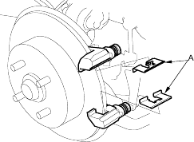
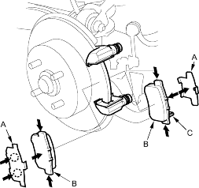
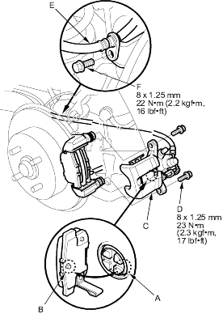

- Remove the pad retainers (A).

- Clean the calliper thoroughly; remove any rust and check for grooves and cracks.
- Check the brake disc for damage and cracks.
- Apply Dow Corning Molykote M77 grease to the retainers on their mating surfaces against the calliper bracket.
- Install the pad retainers. Wipe excess grease off the retainers. Contaminated brake discs and pads reduce stopping ability. Keep grease off the discs and pads.
- Apply Dow Corning Molykote M77 or Daikalub 528D grease to both sides of the pad shims (A), the back of the pads (B) and the other areas indicated by the arrows. Wipe excess grease off the shim. Contaminated brake discs and pads reduce stopping ability. Keep grease off the discs and pads.

- Install the brake pads and pad shims correctly. Install the pads with the wear indicators (C) on the inside.
If you are reusing the pads, always reinstall the brake pads in their original positions to prevent a momentary loss of braking efficiency.
- Rotate the calliper piston clockwise into the cylinder, then align the cut-out (A) in the piston with the tab (B) on the inner pad by turning the piston back so that the calliper can be installed on the pad. Lubricate the boot with rubber grease to avoid twisting the piston boot. If the piston boot is twisted, back it out so it is positioned properly.

- Install the brake calliper (C) and calliper bolts (D) and tighten the bolts to the specified torque.
- Install the brake hose (E) and the bolt (F) and tighten the bolt to the specified torque.
- Press the brake pedal several times to make sure the brake works then test-drive.
NOTE: Engagement of the brake may require a greater pedal stroke immediately after the brake pads have been replaced as a set. Several applications of the brake pedal will restore the normal pedal stroke.
- After installation, check for leaks at hose and line joints or connections and retighten if necessary.